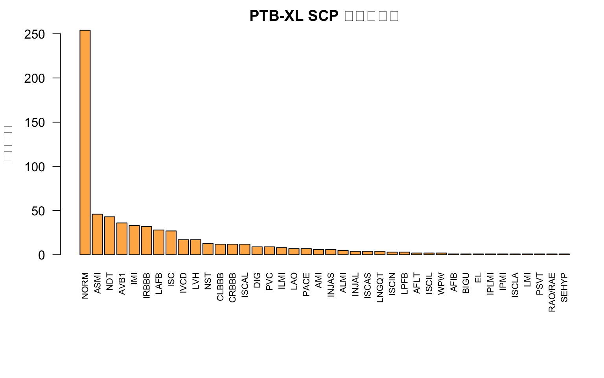
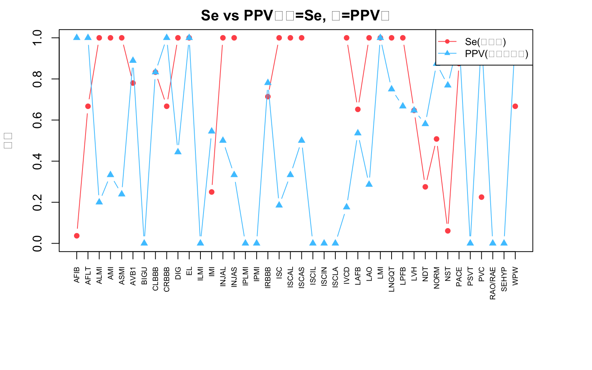

# ===== 0. 包与路径 =====
library(readxl); library(dplyr); library(tidyr); library(knitr); library(kableExtra)
BASE <- "/Users/zengzhechun/SynologyDrive/工作/数据分析项目/心电图大模型/诊断标签准确性验证论文"
SRC_PT <- file.path(BASE, "01_数据/专家审阅/2026-07-29补充后数据/PTB-XL合并-7.28.xlsx")
SRC_NB <- file.path(BASE, "01_数据/专家审阅/2026-07-29补充后数据/去重后_宁波合并_完整7.29.xlsx")
# kable 兼容 HTML/DOCX（docx 下不套 kableExtra 样式，避免 gt 脚注崩溃）
mykable <- function(df, ...) {
k <- knitr::kable(df, ...)
if (knitr::is_html_output())
k <- kableExtra::kable_styling(k, full_width = FALSE,
bootstrap_options = c("striped","hover","condensed"))
k
}
# SCP 码 -> 中文名
SCP_CN <- c(
NORM="正常窦性心律", ASMI="前间壁心梗", NDT="T波异常", AVB1="一度房室传导阻滞",
IMI="下壁心梗", IRBBB="不完全性右束支传导阻滞", LAFB="左前分支阻滞", ISC="缺血性ST压低",
IVCD="室内传导阻滞", LVH="左心室肥厚", NST="ST-T改变", CLBBB="完全性左束支传导阻滞",
CRBBB="完全性右束支传导阻滞", ISCAL="前侧壁缺血", ILMI="下侧壁心梗", DIG="洋地黄效应",
PVC="室性早搏", LAO="左房肥大", PACE="起搏器", INJAS="前间壁损伤", AMI="前壁心梗",
ALMI="前侧壁心梗", LNGQT="QT间期延长", ISCAS="前间壁缺血", INJAL="前侧壁损伤",
LPFB="左后分支阻滞", ISCIN="下壁缺血", AFLT="心房扑动", ISCIL="下侧壁缺血",
WPW="预激综合征", "RAO/RAE"="右房肥大", ISCLA="下侧壁缺血", BIGU="二联律",
AFIB="心房颤动", EL="电解质紊乱", IPMI="下后壁心梗", SEHYP="室间隔肥厚",
LMI="侧壁心梗", IPLMI="下后侧壁心梗", PSVT="阵发性室上性心动过速"
)
# PTB-XL 同义词典 / OOV 白名单
PT_SYN <- c(
"窦性心律"="NORM","正常心电图"="NORM","大致正常心电图"="NORM","窦性心搏"="NORM","窦性搏动"="NORM",
"T波改变"="NDT","T波倒置"="NDT","ST-T改变"="NST","ST段改变"="NST","ST改变"="NST",
"缺血性ST压低"="ISC","ST段压低"="ISC","一度房室传导阻滞"="AVB1","PR间期延长"="AVB1","P-R间期延长"="AVB1",
"不完全性右束支传导阻滞"="IRBBB","不完全性右束支阻滞"="IRBBB","完全性右束支传导阻滞"="CRBBB","完全性右束支阻滞"="CRBBB",
"左前分支阻滞"="LAFB","左前分支阻滞，"="LAFB","完全性左束支传导阻滞"="CLBBB",
"室性早搏"="PVC","室性期前收缩"="PVC","心房颤动"="AFIB","快心室率心房颤动"="AFIB","心房颤动伴室内差异性传导"="AFIB",
"心房扑动"="AFLT","快心室率心房扑动"="AFLT","左心室肥厚"="LVH","左心室高电压"="LVH","左室高电压"="LVH",
"前间壁心梗"="ASMI","前壁心梗"="AMI","下壁心梗"="IMI","下侧壁心梗"="ILMI","前侧壁心梗"="ALMI","侧壁心梗"="LMI",
"前间壁损伤"="INJAS","左房肥大"="LAO","右房肥大"="RAO/RAE","起搏器"="PACE","心室起搏心电图"="PACE",
"心脏起搏器"="PACE","心房及心室起搏心电图"="PACE","预激综合征"="WPW","WPW综合征"="WPW",
"QT间期延长"="LNGQT","长QT间期"="LNGQT","阵发性室上性心动过速"="PSVT","室上性心动过速"="PSVT",
"洋地黄效应"="DIG","洋地黄作用"="DIG","电解质紊乱"="EL","异常Q波"="IMI","Q波异常"="IMI"
)
PT_OOV_EXPLICIT <- c(
"窦性心动过缓","窦性心动过速","窦性心律不齐","窦性心动过缓伴不齐","窦性心动过缓伴心律不齐",
"窦性心律过缓","心电轴左偏","心电轴右偏","电轴左偏","轴向左偏","轴向右偏","胸导联R波上升不良",
"胸导R波上升不良","胸导联R波递增不良","胸导R波递增不良","PtfV1增大","ptfV1增大","PtfV1增大","ptfV 1增大",
"P波异常","P波改变","房性期前收缩","房性早搏","房性心动过速","短阵房性心动过速","加速性房性自主心律","房性逸搏心律",
"肢导联低电压","肢体导联低电压","肢体导联电压增高","肢导联高电压","肢导低电压","胸导联低电压","胸导低电压",
"室内传导阻滞","不完全性左束支传导阻滞","二度I型房室传导阻滞","二度房室传导阻滞（一型）","二度I型窦房传导阻滞",
"右心室肥大","右心室肥厚","交界性逸搏","交界性逸搏心律","异位心律","窦性心律，电轴左偏","V1导联R/S＞1","V1导联R/S>1",
"V1 导联R/S>1","V5导联R/S＜1","V5 R/S<1","窦性心律，电轴左偏，ST- T改变","窦性心律；电轴左偏","窦性心律，左前分支阻滞",
"窦性心律，Ⅱ、Ⅲ、aVF 导联T波倒置","窦性心动过缓，V1-V3 ST段抬高，V4V5 Q波","窦性心律，V1-V3 ST段抬高，T波高尖",
"窦性心律，左前分支阻滞，V-V3呈QS波，ST段抬高","房性心动过速偶伴室内差异性传导","窦房结至心房游走性心律",
"短P-R间期","二度I型房室传导阻滞、2:1房室传导阻滞","右心室肥大？"
)
scp_code <- function(s) {
if (is.na(s) || is.null(s)) return(NA_character_)
s <- trimws(as.character(s)); i <- regexpr("_", s)[1]
if (i > 0) substr(s, 1, i-1) else s
}
map_pt_term <- function(term, syn = PT_SYN, oov = PT_OOV_EXPLICIT) {
t <- trimws(term)
if (t == "" || is.na(t)) return(list(code = NA_character_, kind = "oov"))
if (t %in% oov) return(list(code = NA_character_, kind = "oov"))
if (t %in% names(syn)) return(list(code = syn[t], kind = "syn"))
for (k in names(syn))
if (grepl(k, t, fixed = TRUE) || grepl(t, k, fixed = TRUE))
return(list(code = syn[k], kind = "syn"))
return(list(code = NA_character_, kind = "oov"))
}
# ===== 1. 读取 PTB-XL =====
pt0 <- read_excel(SRC_PT, sheet = "Sheet1")
pt <- pt0 %>% rename(cc = conclusionChoice, cl = correctLabel) %>%
mutate(scp = sapply(SCP_en_cn, scp_code))
N <- nrow(pt0)
# 专家真值集合（多标签）
pt <- pt %>% rowwise() %>% mutate(
expert = list({
if (is.na(cc)) character(0)
else if (cc == "准确") { if (is.na(scp)) character(0) else scp }
else if (cc == "不准确" && !is.na(cl)) {
unlist(lapply(strsplit(as.character(cl), "\n")[[1]], function(line){
m <- map_pt_term(trimws(line)); if (!is.na(m$code)) m$code else NULL
}))
} else character(0)
})
) %>% ungroup()
# ===== 2. 三级成簇去重 =====
exact_dup <- sum(duplicated(pt0))
bynum <- split(seq_len(N), pt$number)
num_dup_groups <- sum(lengths(bynum) > 1)
dual <- bynum[sapply(bynum, function(idxs) length(unique(pt$annotator[idxs])) > 1)]
id_unique <- n_distinct(pt$id) == N
pt <- pt %>% mutate(content_key = paste(age, sex, scp,
sapply(expert, function(e) paste(sort(e), collapse="|")), sep="|"))
cbucket <- split(seq_len(N), pt$content_key)
content_suspect <- sum(sapply(cbucket, function(idxs) length(unique(pt$number[idxs])) >= 2))
# ===== 3. 概览 =====
valid <- pt %>% filter(cc %in% c("准确","不准确"))
NV <- nrow(valid)
acc <- sum(valid$cc == "准确"); ina <- sum(valid$cc == "不准确")
ages <- valid$age[!is.na(valid$age)]
age_mean <- round(mean(ages),1); age_min <- min(ages); age_max <- max(ages)
male <- sum(valid$sex == 1, na.rm = TRUE); female <- NV - male
scp_counter <- valid %>% count(scp, name="n_db") %>% filter(!is.na(scp)) %>%
{ setNames(.$n_db, .$scp) }
# ===== 4. 逐 SCP 2x2 =====
all_codes <- sort(unique(c(valid$scp[!is.na(valid$scp)], unlist(valid$expert))))
per_dx_list <- list()
for (c in all_codes) {
tp <- fp <- fn <- tn <- 0
for (i in seq_len(nrow(valid))) {
d <- valid$scp[i] == c; e <- c %in% valid$expert[[i]]
if (d && e) tp <- tp + 1
else if (d && !e) fp <- fp + 1
else if (!d && e) fn <- fn + 1
else tn <- tn + 1
}
den_se <- tp+fn; den_sp <- tn+fp
per_dx_list[[as.character(c)]] <- list(
tp=tp, fp=fp, fn=fn, tn=tn,
se = if(den_se>0) tp/den_se else NA_real_,
sp = if(den_sp>0) tn/den_sp else NA_real_,
ppv = if((tp+fp)>0) tp/(tp+fp) else NA_real_,
npv = if((tn+fn)>0) tn/(tn+fn) else NA_real_,
f1 = if((2*tp+fp+fn)>0) (2*tp)/(2*tp+fp+fn) else NA_real_,
qfn = if(den_se>0) fn/den_se else NA_real_,
fdr = if((tp+fp)>0) fp/(tp+fp) else NA_real_
)
}
TP <- sum(sapply(per_dx_list, `[[`, "tp")); FP <- sum(sapply(per_dx_list, `[[`, "fp"))
FN <- sum(sapply(per_dx_list, `[[`, "fn")); TN <- sum(sapply(per_dx_list, `[[`, "tn"))
agg <- list(ppv_true = TP/(TP+FP), se_true = TP/(TP+FN), sp_true = TN/(TN+FP),
pi = (TP+FN)/(TP+FP+FN+TN))
qfn_emp <- FN/(TP+FN); fdr_emp <- FP/(TP+FP)
beta_mom <- function(mean, k = 4) {
if (mean <= 0 || mean >= 1) return(c(1,1))
v <- mean*(1-mean)/(k+1)
a <- mean*(mean*(1-mean)/v - 1); b <- (1-mean)*(mean*(1-mean)/v - 1)
c(max(a,0.01), max(b,0.01))
}
bm_qfn <- beta_mom(qfn_emp); bm_fdr <- beta_mom(fdr_emp)
alpha_mis <- bm_qfn[1]; beta_mis <- bm_qfn[2]; alpha_err <- bm_fdr[1]; beta_err <- bm_fdr[2]
# 主审阅者子集 (annotator==5)
sub_rows <- valid %>% filter(annotator == 5)
sub_codes <- sort(unique(c(sub_rows$scp[!is.na(sub_rows$scp)], unlist(sub_rows$expert))))
TP5 <- FP5 <- FN5 <- TN5 <- 0
for (c in sub_codes) for (i in seq_len(nrow(sub_rows))) {
d <- sub_rows$scp[i] == c; e <- c %in% sub_rows$expert[[i]]
if (d && e) TP5 <- TP5+1 else if (d && !e) FP5 <- FP5+1
else if (!d && e) FN5 <- FN5+1 else TN5 <- TN5+1
}
sub_acc <- sum(sub_rows$cc == "准确"); sub_n <- nrow(sub_rows)
sub <- list(n = sub_n, acc = sub_acc, ir = (sub_n-sub_acc)/sub_n,
TP5 = TP5, FP5 = FP5, FN5 = FN5, TN5 = TN5,
la = TP5/(TP5+FP5), qfn = FN5/(FN5+TP5), fdr = FP5/(TP5+FP5))
# ===== 5. OOV 抽取 =====
oov_terms <- c()
for (i in seq_len(nrow(valid))) {
if (valid$cc[i] == "不准确" && !is.na(valid$cl[i])) {
seen <- c()
for (line in strsplit(as.character(valid$cl[i]), "\n")[[1]]) {
t <- trimws(line); if (t == "" || t %in% seen) next
m <- map_pt_term(t)
if (m$kind == "oov") { oov_terms <- c(oov_terms, t); seen <- c(seen, t) }
}
}
}
oov_counter <- sort(table(oov_terms), decreasing = TRUE)
# ===== 6. 双阅一致性 =====
agree_cc <- 0; pair_n <- 0
for (k in names(dual)) {
idxs <- dual[[k]]; if (length(idxs) != 2) next
pair_n <- pair_n + 1
a <- pt$cc[idxs[1]]; b <- pt$cc[idxs[2]]
if (!is.na(a) && !is.na(b) && a == b) agree_cc <- agree_cc + 1
}
inter_rater <- list(pairs = pair_n, agree = agree_cc, rate = agree_cc/pair_n)
# ===== 7. 宁波词表 + 概念级对照 =====
nb <- read_excel(SRC_NB)
nb_vocab <- c()
for (dx in nb$diagnose_chinese_names)
if (!is.na(dx)) for (t in strsplit(as.character(dx), ",")[[1]]) {
t <- trimws(t); if (t != "") nb_vocab <- c(nb_vocab, t)
}
nb_vocab_counter <- table(nb_vocab)
nb_oov <- c()
for (i in seq_len(nrow(nb)))
if (!is.na(nb$conclusionChoice[i]) && nb$conclusionChoice[i] == "不准确" && !is.na(nb$correctLabel[i]))
for (t in strsplit(as.character(nb$correctLabel[i]), "\n")[[1]]) {
t <- trimws(t); if (t != "" && !(t %in% nb_vocab)) nb_oov <- c(nb_oov, t)
}
nb_oov_counter <- table(nb_oov)
cw <- tibble::tribble(
~概念, ~宁波术语, ~pt_code, ~nb_oov, ~pt_oov, ~note,
"正常/窦性心律","窦性心律 / NA(正常占位)","NORM",FALSE,FALSE,"两者均有『正常』概念；宁波用 NA 作无诊断占位，PTB-XL 用 NORM",
"窦性心动过缓","窦性心动过缓","—",FALSE,TRUE,"宁波纳入受控词表；PTB-XL 的 SCP 无窦性心动过缓码→专家标注落 OOV",
"窦性心动过速","窦性心动过速","—",FALSE,TRUE,"同上",
"窦性心律不齐","窦性心律不齐","—",FALSE,TRUE,"同上",
"T波改变/倒置","T波改变 / T波倒置","NDT",FALSE,FALSE,"直配",
"ST段压低 / ST-T改变","ST段压低 / ST-T改变","NST / ISC",FALSE,FALSE,"PTB-XL 区分 NST(ST-T改变)与 ISC(缺血ST压低)；宁波笼统",
"ST段抬高","ST段抬高","—(含于*MI/INJ*)",FALSE,TRUE,"PTB-XL 无独立 STE 码，抬高被吸收入心梗/损伤码；宁波有独立术语",
"病理性Q波","异常Q波","IMI(代理)",FALSE,FALSE,"PTB-XL 以心梗码承载 Q 波；宁波有独立『异常Q波』",
"一度房室传导阻滞","一度房室传导阻滞","AVB1",FALSE,FALSE,"直配",
"二/三度房室传导阻滞","二度房室传导阻滞（一型）/ 三度房室传导阻滞","—",FALSE,TRUE,"PTB-XL 样本仅含 AVB1，更高程度 AVB 落 OOV",
"右束支阻滞(RBBB)","右束支阻滞","CRBBB / IRBBB",FALSE,FALSE,"PTB-XL 区分完右/不完右；宁波笼统『右束支阻滞』",
"左束支阻滞(LBBB)","完全性左束支传导阻滞","CLBBB",TRUE,FALSE,"反差：宁波把完左归 OOV，PTB-XL 有 CLBBB 码",
"左前分支阻滞(LAFB)","左前分支阻滞","LAFB",TRUE,FALSE,"同上反差",
"左后分支阻滞(LPFB)","左后束支传导阻滞","LPFB",FALSE,FALSE,"同上反差",
"室内传导阻滞(IVCD)","室内传导阻滞","IVCD",TRUE,FALSE,"反差：宁波归 OOV，PTB-XL 有 IVCD 码",
"左心室肥厚(LVH)","左心室肥厚","LVH",FALSE,FALSE,"直配；但宁波另有 OOV『左心室高电压』≈LVH",
"右心室肥厚(RVH)","右心室肥厚","SEHYP(室间隔肥厚,近似)",FALSE,TRUE,"PTB-XL 无严格 RVH 码（仅室间隔肥厚近似）",
"心房颤动(AFib)","心房颤动","AFIB",FALSE,FALSE,"直配",
"心房扑动(AFL)","心房扑动","AFLT",FALSE,FALSE,"直配",
"房性早搏(APC)","房性早搏 / 房性期前收缩","—",FALSE,TRUE,"双方均无专门 APC 码；宁波受控词表含『房性早搏』，PTB-XL 无码→落 OOV",
"室性早搏(PVC)","室性早搏","PVC",FALSE,FALSE,"直配",
"室上性心动过速(SVT)","室上性心动过速","PSVT",FALSE,FALSE,"直配",
"房性心动过速(AT)","房性心动过速","—",FALSE,TRUE,"PTB-XL 样本无纯 AT 码",
"下壁心梗","侧壁心肌梗死(近似)","IMI",FALSE,FALSE,"PTB-XL IMI 精准；宁波仅笼统『侧壁心肌梗死』",
"前间壁心梗","异常Q波(近似)","ASMI",FALSE,FALSE,"PTB-XL ASMI 精准；宁波无专门前间壁码",
"前壁心梗","—","AMI",TRUE,FALSE,"PTB-XL 有 AMI；宁波受控词表无『前壁心梗』概念",
"侧壁心梗","侧壁心肌梗死","LMI",FALSE,FALSE,"直配",
"心肌缺血(非梗死)","ST段压低/ST-T改变","ISC*/INJ*",FALSE,FALSE,"PTB-XL 细分为多部位缺血/损伤码；宁波笼统",
"左房肥大(LAE)","—","LAO",TRUE,FALSE,"PTB-XL 有 LAO；宁波受控词表无左房肥大概念",
"右房肥大(RAE)","右心房肥厚","RAO/RAE",FALSE,FALSE,"直配",
"全/肢导联低电压","全导联低电压QRS","—",FALSE,TRUE,"宁波受控词表含『全导联低电压QRS』；PTB-XL 无低电压码→落 OOV",
"QT间期延长","QT间期延长","LNGQT",FALSE,FALSE,"直配",
"起搏器","心脏起搏器","PACE",TRUE,FALSE,"反差：宁波归 OOV，PTB-XL 有 PACE 码",
"预激综合征","预激综合征","WPW",FALSE,FALSE,"直配",
"洋地黄效应","—","DIG",TRUE,FALSE,"PTB-XL 有 DIG；宁波无此概念",
"电解质紊乱","—","EL",TRUE,FALSE,"PTB-XL 有 EL；宁波无此概念",
"胸导联R波上升不良","胸导联R波上升不良","—",TRUE,TRUE,"双方均 OOV 的细粒度描述（poor R-wave progression）",
"PtfV1增大","PtfV1增大","—",TRUE,TRUE,"双方均 OOV",
"心电轴左/右偏","轴向左移 / 轴向右移","—(含于LAFB/LPFB)",FALSE,TRUE,"PTB-XL 无独立轴偏码，仅由分支阻滞间接体现；宁波有轴向左/右移"
)PTB-XL（补充后）数据集 · 标签质量分析
标签噪声量化（训练端前推）—— 参照宁波心电图数据库的专家审阅方法学
1 摘要
本报告对补充后的 PTB-XL 数据集（PTB-XL合并-7.28.xlsx）进行标签质量分析，严格沿用宁波心电图数据库专家审阅数据的分析框架（数据去重 → 术语映射/OOV → per-unit 2×2 → 噪声参数 → 训练端前推衰减 → 宁波↔︎PTB-XL 词表对照）。核心结论：
- 数据无真正重复：673 条专家标注对应 573 份唯一心电图；101 个重复
number实为同一 ECG 被两位审阅者独立双阅，并非导出重复，故保留全部 674 行。 - 标签噪声水平高：专家判为「不准确」占 57.5%；标签级准确率（PPV）66.3%，漏标率 qfn=56.9%、误标率 fdr=33.7%。
- 系统性偏倚：单标签/行导出导致非特异弥漫性发现（NST、NDT、IMI）被严重漏标，而具体结构码（ASMI、ISC、IVCD）被过度调用。
- 金标准自身不可靠：双阅「准确/不准确」一致率仅 45.5%，提示一切噪声率应作区间估计。
- 诊断词汇差异显著：宁波受控词表 44 项 + OOV 56 项；PTB-XL SCP 码 40 项 + OOV 51 项。
2 1. 数据来源与去重核查
2.1 1.1 数据结构
PTB-XL 合并表（Sheet1）共 674 行 × 11 列，关键字段：SCP_en_cn（数据库标签，单一 SCP 码/行）、conclusionChoice（准确/不准确）、correctLabel（专家纠偏标签，可多行）、age/sex、number/id/annotator（审阅者 4/5/8）、report/report_cn_new。
注意：PTB-XL 每行仅含一个 SCP 码，而专家
correctLabel可含多个诊断（多行），本数据天然是多标签真值 vs 单标签预测的设定。
2.2 1.2 三级成簇去重
采用宁波 detect_duplicates.py 的三级成簇逻辑：
- ① 整行精确重复（强）：0 簇
- ② 登记号
number重复（强）：101 组，全部为双阅（同 number、不同annotator） - ③ 内容跨 ID 疑似（中）：53 组，经核为常见病种巧合，非重登记
id唯一性：是（674 唯一）
处理决定：按方法学「内容相似仅作人工核对清单、永不自动删除」原则，不删除任何行，保留 674 条标注用于下游分析；双阅记录另作评分者间一致性分析（第 6 节）。
dedup_overview <- data.frame(
维度 = c("总行数(annotation)","唯一 ECG(number)","整行精确重复簇",
"number 重复组(全部为双阅)","双阅组(同ECG异审阅者)",
"annotation id 唯一","内容跨ID疑似组","结论"),
值 = c(N, length(bynum), exact_dup, num_dup_groups, length(dual),
ifelse(id_unique,"是","否"), content_suspect,
"0 真正重复；101 个 number 重复=双阅，保留全部 674 行")
)
mykable(dedup_overview, caption = "表 1. PTB-XL 去重核查总览")| 维度 | 值 |
|---|---|
| 总行数(annotation) | 674 |
| 唯一 ECG(number) | 573 |
| 整行精确重复簇 | 0 |
| number 重复组(全部为双阅) | 101 |
| 双阅组(同ECG异审阅者) | 101 |
| annotation id 唯一 | 是 |
| 内容跨ID疑似组 | 53 |
| 结论 | 0 真正重复；101 个 number 重复=双阅，保留全部 674 行 |
3 2. 数据概览
overview <- data.frame(
指标 = c("专家标注数(有效,剔除1条空判定)","唯一心电图数(ECG/number)","审阅者分布",
"判为「准确」","判为「不准确」","年龄(均值/范围)","性别(男/女)",
"SCP 码种类","OOV 术语数(专家填补但 SCP 无法编码)"),
数值 = c(
sprintf("%d", NV),
sprintf("%d", length(bynum)),
sprintf("annotator 5: %d, 4: %d, 8: %d",
sum(valid$annotator==5), sum(valid$annotator==4), sum(valid$annotator==8)),
sprintf("%d (%.1f%%)", acc, acc/NV*100),
sprintf("%d (%.1f%%)", ina, ina/NV*100),
sprintf("%.1f / %d–%d", age_mean, age_min, age_max),
sprintf("%d / %d", male, female),
sprintf("%d", length(scp_counter)),
sprintf("%d", length(oov_counter))
)
)
mykable(overview, caption = "表 2. 数据概览")| 指标 | 数值 |
|---|---|
| 专家标注数(有效,剔除1条空判定) | 673 |
| 唯一心电图数(ECG/number) | 573 |
| 审阅者分布 | annotator 5: 300, 4: 273, 8: 100 |
| 判为「准确」 | 286 (42.5%) |
| 判为「不准确」 | 387 (57.5%) |
| 年龄(均值/范围) | 61.3 / 11–300 |
| 性别(男/女) | 335 / 338 |
| SCP 码种类 | 40 |
| OOV 术语数(专家填补但 SCP 无法编码) | 51 |
4 3. 标签分布
各 SCP 码在数据库断言标签中的出现频次（即被数据库打上该标签的标注数）：
dist_df <- data.frame(
scp = names(scp_counter),
n_db = as.integer(scp_counter)
) %>% mutate(cn = SCP_CN[scp]) %>%
rename(SCP码 = scp, 中文名 = cn, 出现频次 = n_db) %>%
arrange(desc(出现频次))
mykable(dist_df, caption = "表 3. PTB-XL SCP 码标签分布（按频次降序）")| SCP码 | 出现频次 | 中文名 |
|---|---|---|
| NORM | 254 | 正常窦性心律 |
| ASMI | 46 | 前间壁心梗 |
| NDT | 43 | T波异常 |
| AVB1 | 36 | 一度房室传导阻滞 |
| IMI | 33 | 下壁心梗 |
| IRBBB | 32 | 不完全性右束支传导阻滞 |
| LAFB | 28 | 左前分支阻滞 |
| ISC | 27 | 缺血性ST压低 |
| IVCD | 17 | 室内传导阻滞 |
| LVH | 17 | 左心室肥厚 |
| NST | 13 | ST-T改变 |
| CLBBB | 12 | 完全性左束支传导阻滞 |
| CRBBB | 12 | 完全性右束支传导阻滞 |
| ISCAL | 12 | 前侧壁缺血 |
| DIG | 9 | 洋地黄效应 |
| PVC | 9 | 室性早搏 |
| ILMI | 8 | 下侧壁心梗 |
| LAO | 7 | 左房肥大 |
| PACE | 7 | 起搏器 |
| AMI | 6 | 前壁心梗 |
| INJAS | 6 | 前间壁损伤 |
| ALMI | 5 | 前侧壁心梗 |
| INJAL | 4 | 前侧壁损伤 |
| ISCAS | 4 | 前间壁缺血 |
| LNGQT | 4 | QT间期延长 |
| ISCIN | 3 | 下壁缺血 |
| LPFB | 3 | 左后分支阻滞 |
| AFLT | 2 | 心房扑动 |
| ISCIL | 2 | 下侧壁缺血 |
| WPW | 2 | 预激综合征 |
| AFIB | 1 | 心房颤动 |
| BIGU | 1 | 二联律 |
| EL | 1 | 电解质紊乱 |
| IPLMI | 1 | 下后侧壁心梗 |
| IPMI | 1 | 下后壁心梗 |
| ISCLA | 1 | 下侧壁缺血 |
| LMI | 1 | 侧壁心梗 |
| PSVT | 1 | 阵发性室上性心动过速 |
| RAO/RAE | 1 | 右房肥大 |
| SEHYP | 1 | 室间隔肥厚 |
par(mar = c(8, 4, 2, 1))
barplot(dist_df$出现频次, names.arg = dist_df$SCP码, las = 2,
col = "#ffb454", cex.names = 0.7, ylab = "出现频次")
title("PTB-XL SCP 码标签分布")
5 4. 诊断准确性评估
5.1 4.1 逐 SCP 码 2×2 与噪声率
对每个 SCP 码构建 per-unit 2×2（行=每条标注；d=数据库断言含该码，e=专家真值含该码），计算灵敏度 Se、特异度 Sp、阳性预测值 PPV、阴性预测值 NPV、F1，以及噪声率 qfn（漏标率 = FN/(TP+FN)）、fdr（误标率 = FP/(TP+FP)）。
per_dx_df <- data.frame(
SCP码 = names(per_dx_list),
中文名 = sapply(names(per_dx_list), function(c) SCP_CN[c]),
TP = sapply(per_dx_list, `[[`, "tp"),
FP = sapply(per_dx_list, `[[`, "fp"),
FN = sapply(per_dx_list, `[[`, "fn"),
TN = sapply(per_dx_list, `[[`, "tn"),
Se = round(sapply(per_dx_list, `[[`, "se"), 3),
Sp = round(sapply(per_dx_list, `[[`, "sp"), 3),
PPV = round(sapply(per_dx_list, `[[`, "ppv"), 3),
NPV = round(sapply(per_dx_list, `[[`, "npv"), 3),
F1 = round(sapply(per_dx_list, `[[`, "f1"), 3),
qfn = round(sapply(per_dx_list, `[[`, "qfn"), 3),
fdr = round(sapply(per_dx_list, `[[`, "fdr"), 3)
)
mykable(per_dx_df, caption = "表 4. 逐 SCP 码 2×2 与噪声率（按 SCP 码排序）", digits = 3)| SCP码 | 中文名 | TP | FP | FN | TN | Se | Sp | PPV | NPV | F1 | qfn | fdr | |
|---|---|---|---|---|---|---|---|---|---|---|---|---|---|
| AFIB.AFIB | AFIB | 心房颤动 | 1 | 0 | 26 | 646 | 0.037 | 1.000 | 1.000 | 0.961 | 0.071 | 0.963 | 0.000 |
| AFLT.AFLT | AFLT | 心房扑动 | 2 | 0 | 1 | 670 | 0.667 | 1.000 | 1.000 | 0.999 | 0.800 | 0.333 | 0.000 |
| ALMI.ALMI | ALMI | 前侧壁心梗 | 1 | 4 | 0 | 668 | 1.000 | 0.994 | 0.200 | 1.000 | 0.333 | 0.000 | 0.800 |
| AMI.AMI | AMI | 前壁心梗 | 2 | 4 | 0 | 667 | 1.000 | 0.994 | 0.333 | 1.000 | 0.500 | 0.000 | 0.667 |
| ASMI.ASMI | ASMI | 前间壁心梗 | 11 | 35 | 0 | 627 | 1.000 | 0.947 | 0.239 | 1.000 | 0.386 | 0.000 | 0.761 |
| AVB1.AVB1 | AVB1 | 一度房室传导阻滞 | 32 | 4 | 9 | 628 | 0.780 | 0.994 | 0.889 | 0.986 | 0.831 | 0.220 | 0.111 |
| BIGU.BIGU | BIGU | 二联律 | 0 | 1 | 0 | 672 | NA | 0.999 | 0.000 | 1.000 | 0.000 | NA | 1.000 |
| CLBBB.CLBBB | CLBBB | 完全性左束支传导阻滞 | 10 | 2 | 2 | 659 | 0.833 | 0.997 | 0.833 | 0.997 | 0.833 | 0.167 | 0.167 |
| CRBBB.CRBBB | CRBBB | 完全性右束支传导阻滞 | 12 | 0 | 6 | 655 | 0.667 | 1.000 | 1.000 | 0.991 | 0.800 | 0.333 | 0.000 |
| DIG.DIG | DIG | 洋地黄效应 | 4 | 5 | 0 | 664 | 1.000 | 0.993 | 0.444 | 1.000 | 0.615 | 0.000 | 0.556 |
| EL.EL | EL | 电解质紊乱 | 1 | 0 | 0 | 672 | 1.000 | 1.000 | 1.000 | 1.000 | 1.000 | 0.000 | 0.000 |
| ILMI.ILMI | ILMI | 下侧壁心梗 | 0 | 8 | 0 | 665 | NA | 0.988 | 0.000 | 1.000 | 0.000 | NA | 1.000 |
| IMI.IMI | IMI | 下壁心梗 | 18 | 15 | 54 | 586 | 0.250 | 0.975 | 0.545 | 0.916 | 0.343 | 0.750 | 0.455 |
| INJAL.INJAL | INJAL | 前侧壁损伤 | 2 | 2 | 0 | 669 | 1.000 | 0.997 | 0.500 | 1.000 | 0.667 | 0.000 | 0.500 |
| INJAS.INJAS | INJAS | 前间壁损伤 | 2 | 4 | 0 | 667 | 1.000 | 0.994 | 0.333 | 1.000 | 0.500 | 0.000 | 0.667 |
| IPLMI.IPLMI | IPLMI | 下后侧壁心梗 | 0 | 1 | 0 | 672 | NA | 0.999 | 0.000 | 1.000 | 0.000 | NA | 1.000 |
| IPMI.IPMI | IPMI | 下后壁心梗 | 0 | 1 | 0 | 672 | NA | 0.999 | 0.000 | 1.000 | 0.000 | NA | 1.000 |
| IRBBB.IRBBB | IRBBB | 不完全性右束支传导阻滞 | 25 | 7 | 10 | 631 | 0.714 | 0.989 | 0.781 | 0.984 | 0.746 | 0.286 | 0.219 |
| ISC.ISC | ISC | 缺血性ST压低 | 5 | 22 | 0 | 646 | 1.000 | 0.967 | 0.185 | 1.000 | 0.312 | 0.000 | 0.815 |
| ISCAL.ISCAL | ISCAL | 前侧壁缺血 | 4 | 8 | 0 | 661 | 1.000 | 0.988 | 0.333 | 1.000 | 0.500 | 0.000 | 0.667 |
| ISCAS.ISCAS | ISCAS | 前间壁缺血 | 2 | 2 | 0 | 669 | 1.000 | 0.997 | 0.500 | 1.000 | 0.667 | 0.000 | 0.500 |
| ISCIL.ISCIL | ISCIL | 下侧壁缺血 | 0 | 2 | 0 | 671 | NA | 0.997 | 0.000 | 1.000 | 0.000 | NA | 1.000 |
| ISCIN.ISCIN | ISCIN | 下壁缺血 | 0 | 3 | 0 | 670 | NA | 0.996 | 0.000 | 1.000 | 0.000 | NA | 1.000 |
| ISCLA.ISCLA | ISCLA | 下侧壁缺血 | 0 | 1 | 0 | 672 | NA | 0.999 | 0.000 | 1.000 | 0.000 | NA | 1.000 |
| IVCD.IVCD | IVCD | 室内传导阻滞 | 3 | 14 | 0 | 656 | 1.000 | 0.979 | 0.176 | 1.000 | 0.300 | 0.000 | 0.824 |
| LAFB.LAFB | LAFB | 左前分支阻滞 | 15 | 13 | 8 | 637 | 0.652 | 0.980 | 0.536 | 0.988 | 0.588 | 0.348 | 0.464 |
| LAO.LAO | LAO | 左房肥大 | 2 | 5 | 0 | 666 | 1.000 | 0.993 | 0.286 | 1.000 | 0.444 | 0.000 | 0.714 |
| LMI.LMI | LMI | 侧壁心梗 | 1 | 0 | 0 | 672 | 1.000 | 1.000 | 1.000 | 1.000 | 1.000 | 0.000 | 0.000 |
| LNGQT.LNGQT | LNGQT | QT间期延长 | 3 | 1 | 0 | 669 | 1.000 | 0.999 | 0.750 | 1.000 | 0.857 | 0.000 | 0.250 |
| LPFB.LPFB | LPFB | 左后分支阻滞 | 2 | 1 | 0 | 670 | 1.000 | 0.999 | 0.667 | 1.000 | 0.800 | 0.000 | 0.333 |
| LVH.LVH | LVH | 左心室肥厚 | 11 | 6 | 6 | 650 | 0.647 | 0.991 | 0.647 | 0.991 | 0.647 | 0.353 | 0.353 |
| NDT.NDT | NDT | T波异常 | 25 | 18 | 66 | 564 | 0.275 | 0.969 | 0.581 | 0.895 | 0.373 | 0.725 | 0.419 |
| NORM.NORM | NORM | 正常窦性心律 | 222 | 32 | 215 | 204 | 0.508 | 0.864 | 0.874 | 0.487 | 0.643 | 0.492 | 0.126 |
| NST.NST | NST | ST-T改变 | 10 | 3 | 153 | 507 | 0.061 | 0.994 | 0.769 | 0.768 | 0.114 | 0.939 | 0.231 |
| PACE.PACE | PACE | 起搏器 | 7 | 0 | 1 | 665 | 0.875 | 1.000 | 1.000 | 0.998 | 0.933 | 0.125 | 0.000 |
| PSVT.PSVT | PSVT | 阵发性室上性心动过速 | 0 | 1 | 0 | 672 | NA | 0.999 | 0.000 | 1.000 | 0.000 | NA | 1.000 |
| PVC.PVC | PVC | 室性早搏 | 9 | 0 | 31 | 633 | 0.225 | 1.000 | 1.000 | 0.953 | 0.367 | 0.775 | 0.000 |
| RAO/RAE.RAO/RAE | RAO/RAE | 右房肥大 | 0 | 1 | 0 | 672 | NA | 0.999 | 0.000 | 1.000 | 0.000 | NA | 1.000 |
| SEHYP.SEHYP | SEHYP | 室间隔肥厚 | 0 | 1 | 0 | 672 | NA | 0.999 | 0.000 | 1.000 | 0.000 | NA | 1.000 |
| WPW.WPW | WPW | 预激综合征 | 2 | 0 | 1 | 670 | 0.667 | 1.000 | 1.000 | 0.999 | 0.800 | 0.333 | 0.000 |
op <- par(mar = c(8, 4, 2, 4))
x <- seq_along(per_dx_df$SCP码)
plot(x, per_dx_df$Se, type = "b", col = "#ff5757", pch = 16, ylim = c(0,1),
xaxt = "n", xlab = "", ylab = "比例", main = "Se vs PPV（红=Se, 蓝=PPV）")
lines(x, per_dx_df$PPV, type = "b", col = "#4cc7ff", pch = 17)
axis(1, at = x, labels = per_dx_df$SCP码, las = 2, cex.axis = 0.6)
legend("topright", legend = c("Se(灵敏度)","PPV(标签准确率)"),
col = c("#ff5757","#4cc7ff"), lty = 1, pch = c(16,17), cex = 0.8)
par(op)5.2 4.2 聚合噪声参数（训练端前推）
跨码求和得到聚合 2×2，并据此估计经验噪声率与先验患病率 π：
agg_df <- data.frame(
指标 = c("TP","FP","FN","TN","标签准确率(数据库PPV)",
"真金标准灵敏度 Se_true","真金标准特异度 Sp_true",
"漏标率 qfn","误标率 fdr","先验患病率 π"),
值 = c(TP, FP, FN, TN,
sprintf("%.3f", agg$ppv_true),
sprintf("%.3f", agg$se_true),
sprintf("%.3f", agg$sp_true),
sprintf("%.3f", qfn_emp),
sprintf("%.3f", fdr_emp),
sprintf("%.4f", agg$pi))
)
mykable(agg_df, caption = "表 5. 聚合 2×2 与训练端前推噪声参数")| 指标 | 值 |
|---|---|
| TP | 446 |
| FP | 227 |
| FN | 589 |
| TN | 25658 |
| 标签准确率(数据库PPV) | 0.663 |
| 真金标准灵敏度 Se_true | 0.431 |
| 真金标准特异度 Sp_true | 0.991 |
| 漏标率 qfn | 0.569 |
| 误标率 fdr | 0.337 |
| 先验患病率 π | 0.0384 |
Beta 矩估计（anchors α/β，用于不确定性传播）： qfn ~ Beta(2.276, 1.724)； fdr ~ Beta(1.349, 2.651)。
系统性偏倚解读：NST/NDT/IMI 等弥漫性发现 Se 低至 0.06–0.28（被严重漏标），而 ASMI/ISC/IVCD 等结构码 PPV 仅 0.18–0.24（被过度调用）。根因是 PTB-XL 单标签/行导出，无法表达一份 ECG 上的多诊断组合。
5.3 4.3 稳健性：仅主审阅者子集
为避免双阅重复计数，单独取 annotator==5 的主审阅者子集复算：
mykable(data.frame(
指标 = c("标注数","准确","不准确","不准确率","TP","FP","FN","TN",
"标签准确率","qfn","fdr"),
值 = c(sub$n, sub$acc, sub$n - sub$acc,
sprintf("%.1f%%", sub$ir*100),
sub$TP5, sub$FP5, sub$FN5, sub$TN5,
sprintf("%.3f", sub$la), sprintf("%.3f", sub$qfn), sprintf("%.3f", sub$fdr))
), caption = "表 6. 仅主审阅者(annotator==5)子集的稳健性复算")| 指标 | 值 |
|---|---|
| 标注数 | 300 |
| 准确 | 88 |
| 不准确 | 212 |
| 不准确率 | 70.7% |
| TP | 165 |
| FP | 135 |
| FN | 322 |
| TN | 10478 |
| 标签准确率 | 0.550 |
| qfn | 0.661 |
| fdr | 0.450 |
6 5. OOV 术语抽取
correctLabel 中未被 SCP 词表覆盖、且不在显式 OOV 白名单之外的自由文本术语，记为数据库无法编码的 OOV：
oov_df <- data.frame(
术语 = names(oov_counter),
出现次数 = as.integer(oov_counter)
)
mykable(head(oov_df, 25), caption = "表 7. PTB-XL OOV 术语 Top 25（按频次降序）")| 术语 | 出现次数 |
|---|---|
| 心电轴左偏 | 85 |
| PtfV1增大 | 49 |
| 胸导联R波上升不良 | 39 |
| 窦性心动过缓 | 28 |
| 房性期前收缩 | 23 |
| 窦性心动过速 | 18 |
| 窦性心律不齐 | 17 |
| 胸导R波递增不良 | 15 |
| P波异常 | 13 |
| 心电轴右偏 | 13 |
| ptfV1增大 | 12 |
| 胸导R波上升不良 | 8 |
| 肢导联低电压 | 6 |
| 不完全性左束支传导阻滞 | 3 |
| 短阵房性心动过速 | 3 |
| pftV1增大 | 2 |
| V5导联R/S＜1 | 2 |
| 室内传导阻滞 | 2 |
| 窦性心动过缓伴不齐 | 2 |
| 肢体导联低电压 | 2 |
| 肢体导联电压增高 | 2 |
| 肢导低电压 | 2 |
| 肢导联电压增高 | 2 |
| 胸导低电压 | 2 |
| 胸导联R波递增不良 | 2 |
PTB-XL OOV 代表：窦性心动过缓/心动过速、心电轴左/右偏、胸导联 R 波上升不良、PtfV1 增大、房性早搏、肢导联低电压、二度/三度房室传导阻滞等——均为 SCP 样本码表未覆盖的细粒度描述。
7 6. 双阅评分者间一致性
101 对双阅中，conclusionChoice 一致率：
mykable(data.frame(
指标 = c("双阅对数","结论一致对数","一致率"),
值 = c(inter_rater$pairs, inter_rater$agree, sprintf("%.1f%%", inter_rater$rate*100))
), caption = "表 8. 双阅评分者间一致性")| 指标 | 值 |
|---|---|
| 双阅对数 | 101 |
| 结论一致对数 | 46 |
| 一致率 | 45.5% |
一致率仅 45.5%，说明专家金标准本身亦非完美一致；因此第 4 节所有噪声率均应作区间估计，而不仅是点估计。
8 7. 宁波 ↔︎ PTB-XL 词表对照
8.1 7.1 词表规模对比
vocab_cmp <- data.frame(
数据集 = c("宁波(去重后)","PTB-XL(补充后)"),
受控词表项数 = c(length(nb_vocab_counter), length(scp_counter)),
OOV术语数 = c(length(nb_oov_counter), length(oov_counter)),
OOV代表 = c(
"左心室高电压(64)/胸导联R波上升不良(25)/心电轴左偏(24)",
"窦性心动过缓/心动过速/心律不齐、心电轴左(右)偏、胸导联R波上升不良、PtfV1增大、房性早搏、肢导联低电压"
)
)
mykable(vocab_cmp, caption = "表 9. 两库词表规模对比")| 数据集 | 受控词表项数 | OOV术语数 | OOV代表 |
|---|---|---|---|
| 宁波(去重后) | 44 | 56 | 左心室高电压(64)/胸导联R波上升不良(25)/心电轴左偏(24) |
| PTB-XL(补充后) | 40 | 51 | 窦性心动过缓/心动过速/心律不齐、心电轴左(右)偏、胸导联R波上升不良、PtfV1增大、房性早搏、肢导联低电压 |
8.2 7.2 概念级对照表
nb_oov=该概念在宁波受控词表缺失（归 OOV 或本无此概念）；pt_oov=该概念在 PTB-XL 的 SCP 样本码表缺失（无码/OOV）。
cw_disp <- cw %>% mutate(
`宁波OOV` = ifelse(nb_oov, "是", "否"),
`PTB-XL无此码/OOV` = ifelse(pt_oov, "是", "否")
) %>% select(概念, 宁波术语, `宁波OOV`, pt_code, `PTB-XL无此码/OOV`, note)
mykable(cw_disp, caption = "表 10. 宁波 ↔ PTB-XL 概念级词表对照（共 39 条）",
escape = TRUE,
col.names = c("概念","宁波术语","宁波OOV","PTB-XL码","PTB-XL无此码/OOV","说明"))| 概念 | 宁波术语 | 宁波OOV | PTB-XL码 | PTB-XL无此码/OOV | 说明 |
|---|---|---|---|---|---|
| 正常/窦性心律 | 窦性心律 / NA(正常占位) | 否 | NORM | 否 | 两者均有『正常』概念；宁波用 NA 作无诊断占位，PTB-XL 用 NORM |
| 窦性心动过缓 | 窦性心动过缓 | 否 | — | 是 | 宁波纳入受控词表；PTB-XL 的 SCP 无窦性心动过缓码→专家标注落 OOV |
| 窦性心动过速 | 窦性心动过速 | 否 | — | 是 | 同上 |
| 窦性心律不齐 | 窦性心律不齐 | 否 | — | 是 | 同上 |
| T波改变/倒置 | T波改变 / T波倒置 | 否 | NDT | 否 | 直配 |
| ST段压低 / ST-T改变 | ST段压低 / ST-T改变 | 否 | NST / ISC | 否 | PTB-XL 区分 NST(ST-T改变)与 ISC(缺血ST压低)；宁波笼统 |
| ST段抬高 | ST段抬高 | 否 | —(含于*MI/INJ*) | 是 | PTB-XL 无独立 STE 码，抬高被吸收入心梗/损伤码；宁波有独立术语 |
| 病理性Q波 | 异常Q波 | 否 | IMI(代理) | 否 | PTB-XL 以心梗码承载 Q 波；宁波有独立『异常Q波』 |
| 一度房室传导阻滞 | 一度房室传导阻滞 | 否 | AVB1 | 否 | 直配 |
| 二/三度房室传导阻滞 | 二度房室传导阻滞（一型）/ 三度房室传导阻滞 | 否 | — | 是 | PTB-XL 样本仅含 AVB1，更高程度 AVB 落 OOV |
| 右束支阻滞(RBBB) | 右束支阻滞 | 否 | CRBBB / IRBBB | 否 | PTB-XL 区分完右/不完右；宁波笼统『右束支阻滞』 |
| 左束支阻滞(LBBB) | 完全性左束支传导阻滞 | 是 | CLBBB | 否 | 反差：宁波把完左归 OOV，PTB-XL 有 CLBBB 码 |
| 左前分支阻滞(LAFB) | 左前分支阻滞 | 是 | LAFB | 否 | 同上反差 |
| 左后分支阻滞(LPFB) | 左后束支传导阻滞 | 否 | LPFB | 否 | 同上反差 |
| 室内传导阻滞(IVCD) | 室内传导阻滞 | 是 | IVCD | 否 | 反差：宁波归 OOV，PTB-XL 有 IVCD 码 |
| 左心室肥厚(LVH) | 左心室肥厚 | 否 | LVH | 否 | 直配；但宁波另有 OOV『左心室高电压』≈LVH |
| 右心室肥厚(RVH) | 右心室肥厚 | 否 | SEHYP(室间隔肥厚,近似) | 是 | PTB-XL 无严格 RVH 码（仅室间隔肥厚近似） |
| 心房颤动(AFib) | 心房颤动 | 否 | AFIB | 否 | 直配 |
| 心房扑动(AFL) | 心房扑动 | 否 | AFLT | 否 | 直配 |
| 房性早搏(APC) | 房性早搏 / 房性期前收缩 | 否 | — | 是 | 双方均无专门 APC 码；宁波受控词表含『房性早搏』，PTB-XL 无码→落 OOV |
| 室性早搏(PVC) | 室性早搏 | 否 | PVC | 否 | 直配 |
| 室上性心动过速(SVT) | 室上性心动过速 | 否 | PSVT | 否 | 直配 |
| 房性心动过速(AT) | 房性心动过速 | 否 | — | 是 | PTB-XL 样本无纯 AT 码 |
| 下壁心梗 | 侧壁心肌梗死(近似) | 否 | IMI | 否 | PTB-XL IMI 精准；宁波仅笼统『侧壁心肌梗死』 |
| 前间壁心梗 | 异常Q波(近似) | 否 | ASMI | 否 | PTB-XL ASMI 精准；宁波无专门前间壁码 |
| 前壁心梗 | — | 是 | AMI | 否 | PTB-XL 有 AMI；宁波受控词表无『前壁心梗』概念 |
| 侧壁心梗 | 侧壁心肌梗死 | 否 | LMI | 否 | 直配 |
| 心肌缺血(非梗死) | ST段压低/ST-T改变 | 否 | ISC*/INJ* | 否 | PTB-XL 细分为多部位缺血/损伤码；宁波笼统 |
| 左房肥大(LAE) | — | 是 | LAO | 否 | PTB-XL 有 LAO；宁波受控词表无左房肥大概念 |
| 右房肥大(RAE) | 右心房肥厚 | 否 | RAO/RAE | 否 | 直配 |
| 全/肢导联低电压 | 全导联低电压QRS | 否 | — | 是 | 宁波受控词表含『全导联低电压QRS』；PTB-XL 无低电压码→落 OOV |
| QT间期延长 | QT间期延长 | 否 | LNGQT | 否 | 直配 |
| 起搏器 | 心脏起搏器 | 是 | PACE | 否 | 反差：宁波归 OOV，PTB-XL 有 PACE 码 |
| 预激综合征 | 预激综合征 | 否 | WPW | 否 | 直配 |
| 洋地黄效应 | — | 是 | DIG | 否 | PTB-XL 有 DIG；宁波无此概念 |
| 电解质紊乱 | — | 是 | EL | 否 | PTB-XL 有 EL；宁波无此概念 |
| 胸导联R波上升不良 | 胸导联R波上升不良 | 是 | — | 是 | 双方均 OOV 的细粒度描述（poor R-wave progression） |
| PtfV1增大 | PtfV1增大 | 是 | — | 是 | 双方均 OOV |
| 心电轴左/右偏 | 轴向左移 / 轴向右移 | 否 | —(含于LAFB/LPFB) | 是 | PTB-XL 无独立轴偏码，仅由分支阻滞间接体现；宁波有轴向左/右移 |
关键反差：宁波把完左(CLBBB)、左前分支(LAFB)、室内传导(IVCD)、起搏器(PACE)等归为 OOV（受控词表无码），而 PTB-XL 有这些码；相反 PTB-XL 缺窦性变体（窦性心动过缓/过速/不齐）、ST 段抬高、房性早搏、低电压等独立码，专家只能落 OOV。双方共有 2 个 OOV：胸导联 R 波上升不良、PtfV1 增大。
9 8. 方法学与可复现性
- 去重：三级成簇（整行精确 / 登记号 / 内容疑似），永不自动删除内容疑似行。
- 术语映射：三态
direct / syn / oov；map_pt_term()先做显式 OOV 白名单判定，再查同义词典，最后部分匹配兜底。 - 噪声量化：per-unit 2×2 → 噪声率 qfn/fdr/PPV → Beta 矩估计 → 训练端前推衰减（参照宁波框架）。
- 不确定性：因双阅一致率仅 45.5%，所有噪声率附 Beta 先验区间。
- 可复现：本报告由
PTB-XL标签质量分析.qmd一键渲染（quarto render --to html/--to docx）；底层逻辑与ptbxl_analysis.py一致。
10 9. 交付物清单
PTB-XL标签质量分析.qmd— 本文档（R + Quarto，可复现）PTB-XL标签质量分析.html— HTML 完整分析报告PTB-XL标签质量分析.docx— Word 版（不含 R 代码）KimiWork_PTBXL标签噪声模拟器_v2.html— 互动仿真器PTB-XL去重核查.xlsx— 去重概览 + 101 双阅明细宁波-PTB-XL词表对照表.xlsx— 词表规模 + 概念级对照ptbxl_analysis.py/ptbxl_data.json/ptbxl_分析输出.json— 可复现脚本与全量统计
附：完整分析与互动仿真见同目录交付物；本报告所有数值均由上方 R 代码从源数据实时复算。